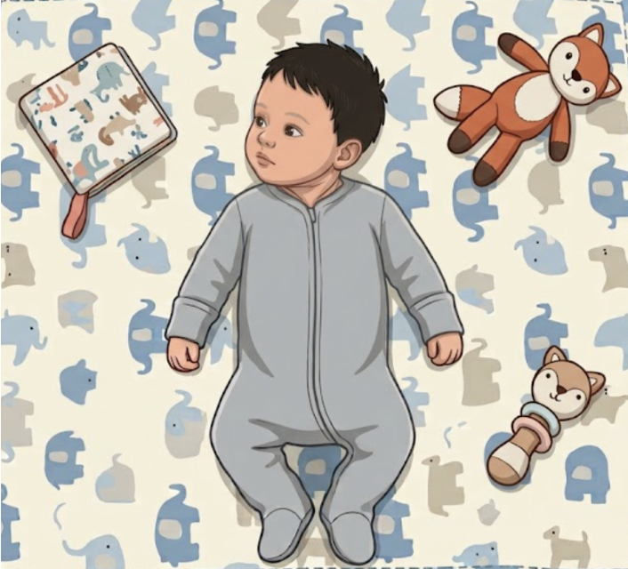

A 2-Month-Old with a Head Tilt — Muscular Torticollis, or Something Else?
Liam, a 2-month-old baby boy, was referred by the Maternal Child Health Centre for OPD Physio.
This is his 1st OPD Physio session. Liam is brought by his parents and the domestic helper.
Mother noticed around week 3 that Liam prefers to rotate his head to the right, no matter he is awake or sleeping.
She feels frustrated especially during breastfeeding — the baby latches well on the left breast but struggles, fusses, and frequently loses suction when on the right breast.
She also noticed a flat spot developing on the back-right side of his skull.
Liam also struggles and hates tummy time.
Resting posture in supine:

Liam's resting postureA small, non-tender, olive-shaped mass (approximately 1.5 cm) is palpable within the lower third of the left Sternocleidomastoid (SCM) muscle belly.
(Confirmed with mother, the last milk feeding time of the baby was 1.5 hrs ago)
| Right | Left | |
|---|---|---|
| Side flexion | Unable / 20°, tight end feel | Unable / 45°, soft end feel |
| Rotation | 90° / 100°, soft end feel | To midline only / 45°, tight end feel |
| Combined movement (side flexion + rotation) | Full ROM, soft end feel | 1/2 ROM, tight end feel |
You are the physiotherapist seeing Liam for his 1st OPD Physio session.
Tap each option to see what it would show.